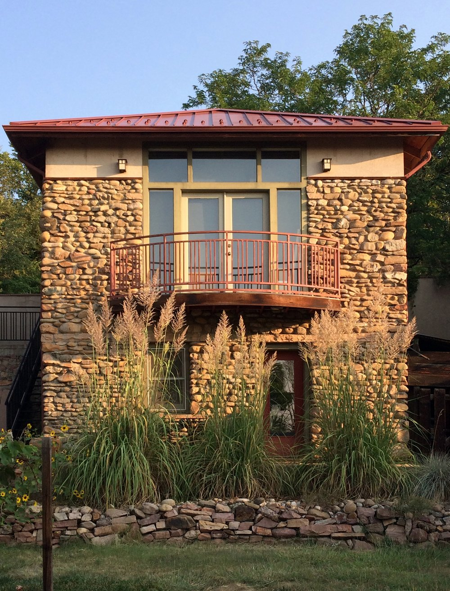

I had a graphic design career for fifty years and am now in recovery from
that
career. I did some
silk screen in college in the 1960s, a few prints in the 1980s and then nothing until 2019 when I
built a set up for silk screen in the garden level of my design studio.
Although very small,
the studio affords me the luxury of having every thing I need to silkscreen in one place. With the
exception of outputting film, which is done by the fine folks at Anthem in San Francisco, I do
everything by hand for each print.
The allure of silkscreen for me is the smooth and vibrant
color along with the crisp delineation of form.
